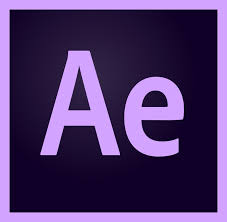
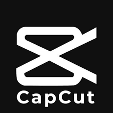

Adobe After Effects 2026
Used for masking, cleanup, and motion compositing.
Rotoscope
Rotoscoping is an animation technique where artists trace over live-action footage frame by frame. It is used to create realistic motion, isolate subjects, and blend visual effects with filmed scenes.
Applications used

Used for masking, cleanup, and motion compositing.

Used for quick cuts, timing, and finishing edits.
Reference video
Cheating on you
A bright and energetic music video used as a motion reference for timing and style.
Watch on YouTubeProgress
I was introduced to rotoscoping and the After Effects interface. I also set up the project and imported the source footage.
I learned basic rotoscoping techniques, created compositions, and explored how the timeline workflow functions.
I practiced advanced layer management and used the Roto Brush tool to make initial selections and create masks.
Tracking and cleanup became more consistent as I refined edges, adjusted frames, and improved timing across the clip.
Color and contrast refinements helped the subject separate from the background while keeping the motion readable.
The final pass focused on polishing details, balancing the composition, and preparing the sequence for presentation.
I focused on refining edge quality, smoothing frame-to-frame movement, and cleaning up the subject silhouette.
I adjusted timing on the harder sections and made sure the motion stayed consistent through each cut.
I strengthened the color balance, improved contrast, and checked how the rotoscoped layers blended with the footage.
I revisited problem frames, fixed rough transitions, and kept the animation readable at playback speed.
I organized the project files, reviewed the comps, and prepared the best takes for final presentation.
I did a full quality check, catching small mistakes in masks, spacing, and overall consistency.
I polished the final export settings and made sure the sequence was ready to share.
I completed the project, exported the finished result, and reviewed the final presentation.